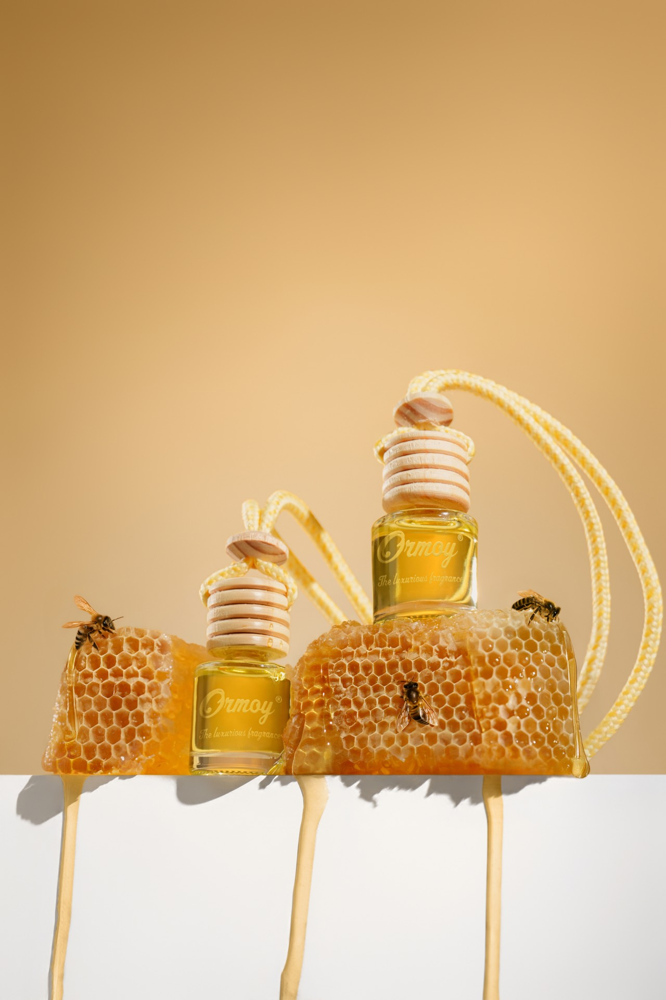
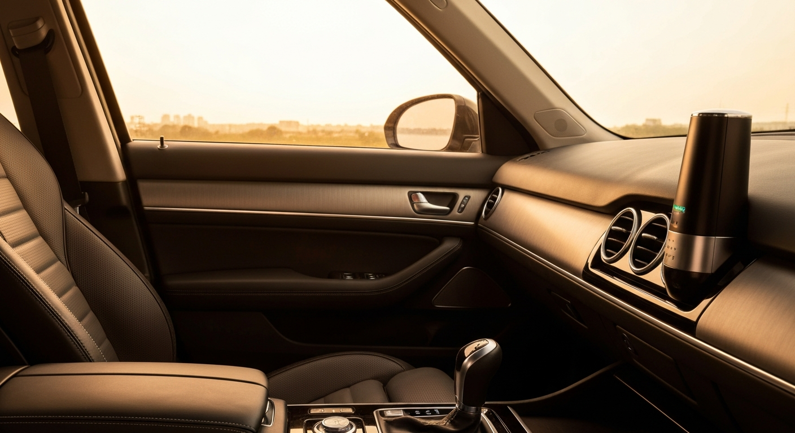

Tips & Tricks23 April 2026
Parfum Mobil Tahan Lama: Tips Memilih & Pilihan Terbaik 2026
Kenapa parfum mobil cepat habis dan bagaimana memilih yang benar-benar bertahan berminggu-minggu di kabin.
Baca Selengkapnya →
Daftar Isi
Macet 2 jam dari Sudirman. Akhirnya parkir, pintu terbuka — dan aroma pertama yang menyambut kamu itu bukan hal kecil. Itu momen yang kamu ciptakan untuk dirimu sendiri, bahkan sebelum siapa pun ikut masuk.
Sebagian orang masih anggap parfum mobil urusan sepele. Gantung yang bentuk pohon cemara dari minimarket, beres. Tapi ada yang sudah paham: aroma kabin itu bagian dari identitas. Sama bobotnya dengan jam tangan yang kamu pakai ke meeting, atau sepatu yang kamu pilih sebelum keluar rumah.
Jadi pertanyaannya bukan lagi apakah parfum mobil itu penting. Pertanyaannya adalah: berapa harga yang wajar untuk kualitas yang benar-benar terasa?
Di pasaran Indonesia 2026, kamu bisa menemukan parfum mobil seharga Rp 10.000 sampai lebih dari Rp 300.000. Rentang yang lebar sekali untuk produk yang katanya sama-sama bikin kabin wangi.
Perbedaannya nyata, dan ada di tiga hal:
Parfum murah biasanya pakai fragrance oil sintetis dengan konsentrasi rendah. Hari pertama aromanya kuat, tapi dalam 3–5 hari sudah menguap. Parfum premium menggunakan bahan dengan konsentrasi lebih tinggi — hasilnya karakter aromanya lebih kompleks, lebih berlapis, dan jauh lebih tahan lama.
Produk premium menggunakan slow-release technology — sistem yang melepas aroma secara bertahap, bukan sekaligus. Intensitasnya konsisten selama berminggu-minggu, bukan meledak di hari pertama lalu hilang begitu saja.
Kabin mobil itu ruang tertutup. Di bawah terik matahari Jakarta, suhunya bisa tembus 60 derajat Celsius. Parfum yang tidak diformulasikan dengan benar bisa menghasilkan uap yang bikin tidak nyaman, bahkan mengganggu fokus berkendara. Produk premium mempertimbangkan faktor ini sejak awal — bukan setelah produknya jadi.
Begini gambaran pasar parfum mobil Indonesia di 2026, dipetakan per segmen harga:
| Rentang Harga | Karakteristik | Cocok Untuk |
|---|---|---|
| Rp 10.000 – Rp 30.000 | Produk gantung kertas atau gel murah. Aroma satu dimensi, cepat habis. | Kebutuhan darurat saja |
| Rp 35.000 – Rp 80.000 | Merek lebih dikenal, termasuk impor massal. Kualitas lebih baik tapi daya tahan terbatas. | Pengguna kasual |
| Rp 80.000 – Rp 200.000 | Premium lokal dan impor mid-range. Layering aroma, daya tahan 2–4 minggu, kemasan yang layak tampil. | Pengemudi yang peduli pengalaman berkendara |
| Rp 200.000 ke atas | Niche fragrance atau merek parfum rumahan. Harga tinggi, performa tidak selalu proporsional. | Kolektor atau pengguna spesifik |
ORMOY bermain di segmen Rp 80.000 – Rp 200.000 — dengan posisi yang sangat kompetitif. Kamu mulai merasakan layering aroma yang sesungguhnya, daya tahan yang konsisten, dan kemasan yang tidak perlu kamu sembunyikan kalau ada tamu di mobilmu.
Ini yang sering disalahpahami: harga premium bukan berarti kamu membayar nama merek. Kamu membayar pengalaman yang berbeda secara nyata.
Parfum premium punya struktur top note, heart note, dan base note yang terencana. Top note adalah kesan pertama yang kamu cium saat masuk kabin — segar, tajam, langsung terasa. Heart note adalah karakter utama yang muncul beberapa menit kemudian. Base note bertahan paling lama, biasanya aroma hangat seperti kayu, musk, atau vanilla.
Parfum murah hanya punya satu lapis. Parfum premium memberikan perjalanan aroma yang berubah secara halus sepanjang hari — seperti kayu yang dijemur matahari, hangat dan konsisten.
Slow-release technology bukan sekadar klaim di kemasan. Produk yang benar-benar menggunakan teknologi ini melepas aroma secara terkontrol, bukan sekaligus. Hasilnya: kamu tidak perlu ganti produk setiap minggu.
Kalau dihitung per hari pemakaian, parfum premium justru sering lebih hemat dari produk murah yang cepat habis. Ini bukan soal gengsi — ini soal nilai nyata per rupiah yang kamu keluarkan.
Kalau kamu pernah menjemput klien atau bawa rekan kerja naik mobilmu, kamu tahu betapa detailnya mata orang. Kemasan parfum mobil premium dirancang untuk terlihat — bukan disembunyikan di bawah jok. Ini bagian dari pengalaman, bukan sekadar estetika tambahan.
Pertanyaan yang sering muncul di forum otomotif Indonesia: kenapa harus pilih merek lokal kalau ada yang impor?
Jawabannya ada di konteks penggunaan. Parfum mobil impor dirancang untuk iklim dan kondisi berkendara negara asalnya. Formulasi untuk cuaca Eropa yang dingin dan kering belum tentu optimal di kabin mobil yang diparkir di bawah terik matahari tropis Indonesia selama 6 jam.
Merek lokal yang serius memformulasikan produknya dengan mempertimbangkan iklim tropis Indonesia — suhu kabin yang ekstrem, kelembaban tinggi, dan durasi paparan sinar matahari yang jauh berbeda dari negara empat musim.
ORMOY berdiri sejak 2012. Lebih dari 14 tahun mengembangkan parfum mobil khusus untuk kondisi berkendara di Indonesia. Dengan lebih dari 20 varian aroma yang tersebar di koleksi SIGNATURE, Comfort, Fresh, dan Sweet, setiap formulasi mempertimbangkan bagaimana aroma itu berperilaku di kabin yang panas — bukan di showroom ber-AC.
Untuk kamu yang penasaran dengan pengalaman nyata menggunakan salah satu produk ORMOY, review lengkap Honey Wood bisa kamu baca di artikel review Honey Wood.
Ini bukan soal murah atau mahal. Ini soal nilai yang kamu dapatkan per rupiah yang kamu keluarkan.
Ada beberapa hal yang bisa kamu periksa sebelum membeli:
Mobilmu bukan sekadar alat transportasi. Itu ruang pribadimu di tengah kemacetan — tempat kamu menyiapkan pikiran sebelum meeting penting, atau tempat kamu akhirnya bisa bernafas setelah hari yang panjang.
Aroma yang tepat mengubah semua itu. Bukan secara dramatis. Tapi secara nyata, setiap kali kamu buka pintu mobil.
Kalau kamu sudah di titik di mana parfum mobil dari minimarket tidak lagi terasa cukup, itu tanda yang jelas. Jelajahi koleksi lengkap ORMOY dan temukan aroma yang cocok dengan karaktermu di halaman produk ORMOY.
Untuk kualitas yang benar-benar terasa — bahan pilihan, slow-release technology, daya tahan berminggu-minggu — kisaran Rp 80.000 hingga Rp 200.000 sudah masuk akal. Di bawah itu, aromanya biasanya cepat habis dan kurang kompleks.
Tidak selalu. Harga tinggi tidak otomatis berarti kualitas lebih baik. Yang perlu kamu perhatikan adalah bahan baku, teknologi pelepasan aroma, dan track record mereknya. Produk lokal premium seperti ORMOY membuktikan bahwa harga yang masuk akal bisa menghasilkan kualitas yang bersaing head-to-head dengan merek impor.
Produk tanpa slow-release technology melepas seluruh aromanya dalam waktu singkat. Suhu kabin yang tinggi — terutama mobil yang diparkir di luar ruangan siang hari — mempercepat penguapan. Produk premium dengan teknologi pelepasan bertahap memang dirancang untuk kondisi seperti ini.
Dengan slow-release technology yang baik, parfum mobil premium seharusnya bertahan 3 hingga 6 minggu dengan intensitas yang konsisten. Kalau aromanya sudah memudar dalam 5–7 hari, produknya tidak menggunakan teknologi pelepasan yang memadai.
Tergantung preferensi dan konteks. Aroma segar seperti aquatic atau citrus cocok untuk perjalanan pagi atau cuaca panas. Aroma hangat seperti woody atau kopi lebih nyaman untuk perjalanan malam atau suasana yang lebih intim. ORMOY punya lebih dari 20 varian yang mencakup keduanya.
Bisa — dan dalam banyak kasus justru lebih relevan. Merek lokal yang serius memformulasikan produknya untuk iklim tropis Indonesia, kondisi yang sangat berbeda dari negara asal merek impor. ORMOY mengembangkan produknya sejak 2012 khusus untuk kondisi berkendara di Indonesia.
Pilih produk dengan formulasi yang jelas dan dari merek dengan reputasi yang bisa diverifikasi. Hindari produk beraroma sangat menyengat atau yang tidak mencantumkan informasi bahan. Merek yang sudah lebih dari 14 tahun di pasar umumnya sudah melalui pengujian yang jauh lebih ketat.
ORMOY hadir sejak 2012 dengan satu misi: parfum mobil premium yang benar-benar dirancang untuk kondisi berkendara Indonesia. Lebih dari 20 varian aroma, teknologi slow-release, dan kemasan yang layak tampil — semua di harga yang masuk akal.
Pilih dari koleksi SIGNATURE, FRESH, COMFORT, atau SWEET sesuai karakter berkendara kamu.
Beli SekarangGratis ongkir untuk pembelian pertama

Tips & Tricks23 April 2026
Kenapa parfum mobil cepat habis dan bagaimana memilih yang benar-benar bertahan berminggu-minggu di kabin.
Baca Selengkapnya → Tips & Tricks
Tips & Tricks
21 April 2026
Panduan praktis memilih parfum mobil sesuai karakter aroma, kondisi kabin, dan gaya berkendara kamu.
Baca Selengkapnya →